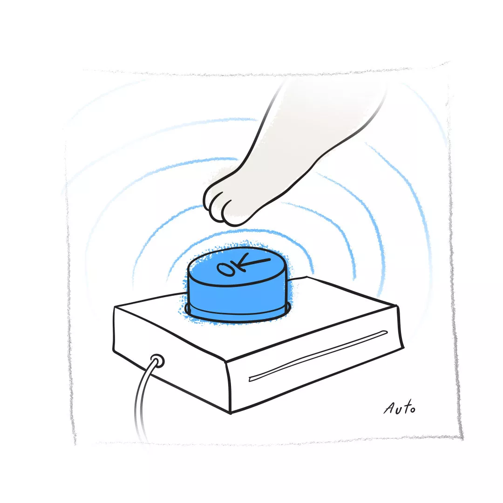
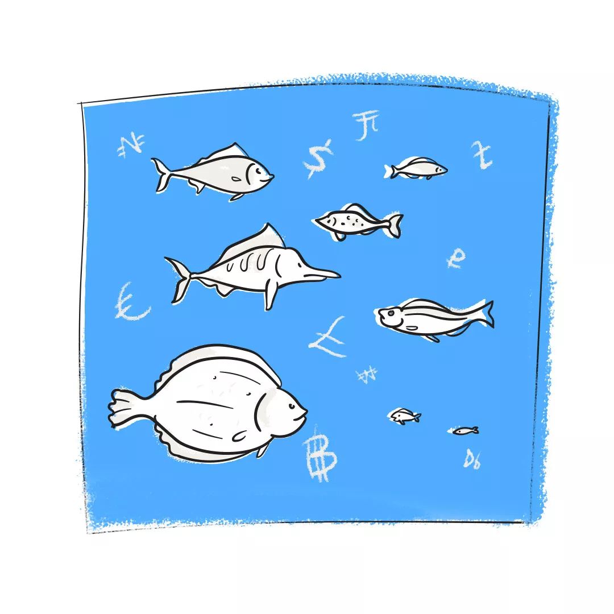

Проверка и испытания продукта на соответствия между реальным поведением программы и её ожидаемым поведением.
Цель тестирования
Поиск багов, улучшение продукта, работает ли ПО согласно требованиям
Критерии начала и окончания тестирования
Критерии начала тестирования: готовность тестовой платформы, законченность разработки требуемого функционала, наличие всей необходимой документации.
Процесс тестирования можно закончить тогда, когда дополнительные тесты не будут существенно изменять\улучшать качество программного обеспечения.
Что такое качество?
Качество это — соответствие требованиям.
Разница между QA, QC и тестировщиком
Quality Assurance – Обеспечение качества – система которая будет работать на качество продукта, искать большее количество ошибок за меньшее количество тестов
Quality Control предполагает обычное тестирование
+ тестирование на соответствие заявленному уровню качества, контроль соблюдения требований.
Что такое билд\сборка(Build)?
В контексте программирования, сборка представляет собой версию программы. Промежуточный продукт
Опишите основные фазы STLC? Дайте определение Entry и Exit Criteria.
Цикл состоит из шести основных этапов:
Анализ требований
Планирование тестирования
Создание тест-кейсов
Настройка тестового окружения
Выполнение тестирования
Завершение цикла тестирования
Критерии входа (entry criteria)
— это набор общих и специфичных условий для продолжения процесса с определенной задачей, например, фаза тестирования.
Критерии выхода (exit criteria)
— это набор общих и специфичных условий, согласованных заранее с заинтересованными сторонами, для того, чтобы процесс мог официально считаться завершенным
Чем отличаются Верификация от Валидации?
Валидация подтверждает правильность работы, а верификация подтверждает наличие
Гибкие методологии
Гибкая методология разработки – взаимной работы самоорганизующихся кросс-функциональных команд между собой.
Scrum – Это метод AGILE, фрэймворк
Agile – набор методов и принципов гибким управлением проектами.
Что такое качество программного обеспечения(Software Quality)?
Для тестера: метрикой качества является, то насколько близок разработанный продукт к ожидаемому результату(к требованиям). Удовлетворенность конечного заказчика.
Что такое обеспечение качества продукта(Software Quality Assurance)?
Это процесс отслеживания и совершенствования всех видов деятельности связанных с разработкой программного обеспечения.
Этот процесс включает в себя все, начиная со сбора требований, дизайна, код-ревью, тестирования, имплементирования и заканчивая обслуживанием
В чем разница между тестированием ПО(Software Testing) и обеспечением качества продукта(Software QA)?
Тестирование в основном фокусируется на исходном программном коде, используя различные методики тестирования(черный, белый, серый ящики).
Качество продукта — измеряет качество процессов разработки продукта.
Что такое тестирование программного обеспечения(Software Testing)?
Цель тестирования программного обеспечения это — верификация, валидация и поиск ошибок.
Возможно ли найти и исправить все баги в программном продукте? Зачем нужно тестирование?
Нет, невозможно. Но тестирование необходимо чтобы уменьшить количество ошибок.
Какое самое важное влияние тестер оказывает на процесс разработки продукта?
Улучшает качество
Опишите что такое анализ рисков в тестировании?
Анализ рисков — действия, предпринятые во избежание ошибок в проекте разработки программного обеспечения, которые уменьшают негативное влияние на объем, качество, своевременность или стоимость проекта.
Опишите, пожалуйста, процесс тестирования?
Планирование тестирования
Изучение докуентации
Создание необходимых артефактов тестирования
Выполнение тестирования(запуск тест-кейсов)
Заполнение баг-репортов и последущее отслеживание исправления дефектов
Написание отчетов о проделанном тестировании
Какие типы тестирования вы знаете?
>
Функциональное и нефункциональное
Виды и уровни тестирования
Виды и уровни тестирования
Виды:
Дымовое тестирование (Smoke Testing)
Тест критического пути
Расширенный тест (Extended test)
New Feature Test
Регрессионное тестирование (Regression Testing)
Тестирование сборки (Build Verification Test)
Санитарное тестирование (Sanity Testing)
Уровни:
Модульное тестирование (Unit testing) – тестирование отдельных модулей
Интеграционное тестирование (Integration testing) – тестирование взаимодействия юнитов важно
Системное тестирование (System testing) – полная проверка системы
Приемочное тестирование (Acceptance testing)
Тестирование методом черного ящика (Black-box testing)
Тестирование методом белого ящика (White-box testing),
Тестирование методом серого ящика
Какие виды подходов к интеграционного тестирования?
Большой взрыв (англ. Big bang approach); - модули и системные компоненты объединены между собой и тестируются вместе
Снизу вверх (англ. Bottom-Up Approach); - Сначала тестируем нижние модули
Сверху вниз (англ. Top-Down Approach); - Сначала тестируем верхние модули
Смешанный / сэндвич (англ. Hybrid / Sandwich). –
Что такое Configuration Testing?
Конфигурационное тестирование (Configuration Testing) – тестирование на различных конфигурациях, (конфигурация – разные настройки)
Что такое Performance Testing?
Тестирование производительности — как быстро работает вычислительная система или её часть под определённой нагрузкой. (нефункциональное)
Что такое Sanity Testing?
Санитарное тестирование - валидация важных частей функциональности системы, когда мы получаем относительно стабильный билд.
Валидация- проверка работоспособности какой-то функциональности, и это динамический процесс
Что такое End-to-End тест?
Сквозное тестирование - это тестирование на всех уровнях, начиная с фронтенда заканчивая бекэндом.
Фронтенд – пользовательский интерфейс
Бэкенд – это внутренности сайта
Что такое тестирование безопасности?
Тестирование безопасности — оценка уязвимости программного обеспечения к различным атакам.
Что такое тестирование на основе рисков?
Тестирование на основе рисков (risk-based testing) — проверка самых важных и потенциально имеющих недостатки функций.
Что такое динамическое тестирование?
Динамическое тестирование – тестирование с запуском кода. То есть, подразумевает фактическую эксплуатацию программы.
Что такое Regression и Confirmation тестирования, какая между ними разница?
Regression - собирательное название для всех видов тестирования программного обеспечения, направленных на обнаружение ошибок в уже протестированных участках исходного кода.
Confirmation - Повторное тестирование - это процесс проверки исправлений, внесенных в конкретный модуль или элемент.
Что такое регрессионное тестирование?
Повторная проверка ПО после исправления бага, для того чтобы убедиться, что не появилось новых ошибок , так как разработчик вносил изменения в код
Как часто следует проводить регрессионное тестирование продукта?
В каждом новом билде

Что такое Smoke тестирование?
Дымовой тест —означает минимальный набор тестов на явные ошибки.
Что такое тест критического пути
Проверка основной массы функциональностей
Что такое расширенный тест (extended)
Много супер негативных тестов
Что такое негативное тестирование?
“Негативное” тестирование нестандартного использования (поведение продукта при некорректных действиях пользователя.)
Что такое функциональное тестирование?
Функциональные требования ПО vs его реальные характеристики
Проверка функций тестируемого продукта
Что такое нефункциональное тестирование?
Тестирование удобства использования, тестирование безопасности, тестирование локализации (адаптация к языку и культуре) и интернационализации (насколько продукт сможет адаптироваться к той или иной локали), тестирование производительности
Проверка свойств
Что такое Ad-hoc тестирование?
Интуитивное тестирование
Что такое “позитивное”(Positive) тестирование?
“Позитивное” тестирование направлено на выполнение тест-кейсов при которых поведение пользователя не выходит за рамки “нормального”
С помощью какого типа тестирования находится наибольшее количество багов?
С помощью “негативного”.
Что такое Юнит-тестирование(Unit testing)?
Цель данного тестирования состоит в изоляции отдельных частей ПО(юнитов) и последующая проверка корректности работы этих юнитов независимо друг от друга
Что такое стресс-тестирование(Stress testing)?
Стресс-тест делает упор на надежность, доступность и обработку ошибок при большой нагрузке.
Что такое приемочное тестирование(Acceptance Testing)?
Приемочное тестирование — это тип тестирования выполняемый по методике “черного ящика”, непосредственно перед отправкой\доставкой ПО к заказчику
В него входит:
Пользовательское тестирование
Эксплуатационное
На соответствие контракту
Альфа (на стороне разрабов)
Бета (на стороне юзера)
Что такое тестирование с помощью “черного\белого\серого” ящика?
Тестирование “черного” ящика — тестер не имеет доступа к исходному коду
Тестирование “белого” ящика — тестер имеет доступ к исходному коду продукта
Тестирование “серого” ящика — знает не весь код
Документация
Основные атрибуты баг-репорта?
Описание
Проект
Шаги воспроизведения
Фактический и ожидаемый результат
Версия билда
Серьезность(Severity)
Приоритет(Priority)
Окружение envirenment
Автор
Назначение
Статус
Прикрепленные файлы
Что такое Priority и Severity в баг-репорте?
Severity – Серьезность. Влияние дефекта на работоспособность продукта
Blocker(ошибка приводящая программу в нерабочее состояние)
Critical ( ошибки приводящие ключевой функционал в нерабочее состояние)
Major (серьезные ошибки свид. Об отклонении от бизнес-логики, не сильно влияющие)
Minor (незначительный дефект)
Trivial (баг не имеет влияния на функционал, например орфографическая ошибка)
medium (ошибка должна быть обязательно исправлена)
low (ошибка не критична)
Что такое тест-план? Основные разделы тест-плана
Документ, описывающий весь объем работ по тестированию, начиная с описания объекта, стратегии, расписания, критериев начала и окончания тестирования, до необходимого в процессе работы оборудования, специальных знаний, а также оценки рисков с вариантами их разрешения.
Название
Идентификационные данные программного продукта, включая версию\номер релиза\сборки
Историю ревизии тест-плана, включая авторов, даты создания\изменения, ответственных за согласование тест-плана
Содержание
Цели документа, целевую аудиторию(для кого пишется тест-план)
Объекта тестирования
Обзор(краткое описание) тестируемого продукта
Соответствующий список связанных документов, например, требования, проектные документы, другие тест-планы и т. д.
Соответствующие стандарты или юридические требования
Соответствующие соглашения об именах и условные обозначения
Общая организация проекта и персонал/контакт-информация/ответственность
Анализ рисков проекта
Приоритеты тестирования
Покрытие(объем) и ограничения тестирования
Используемые тестовые инструменты, включая версии, патчи и т. д.
Распределение обязанностей(тест-кейсов) по персоналу(тестерам) и т.д.
Какие бывают артефакты для тестирования?
Тест-план, тест-кейс, стратегия, баг-репорт, чек-лист, отчет о тестировании
Что такое тест-кейс?
Тест-кейс — набор шагов, набор входных значений, предусловий выполнения, ожидаемых результатов и постусловий выполнения.
Основные атрибуты тест кейса
Номер
Название и краткое описание
Предварительные шаги
Шаги
Ожидаемый результат
Чем тест-кейс отличается от баг-репорта
Баг репорт - это то как выглядит проблема с точки зрения пользователя.
Тест кейс - как именно будет тестироваться, что проблема исправлена.
Что такое чек-лист?
Чек-лист – это таблица-список возможных проверок составляющих продукта.
Когда использовать тест-кейс, а когда чек-лист?
Чек-лист используют когда небольшая команда профи, простой продукт
Тест-кейсы используют когда много новичков, сложный функционал, большая команда
Что такое юз-кейс(use case)?
Каждый юз-кейс представляет для себя законченную операцию\последовательность выполняемую пользователем
В чем разница между тест-кейсом и тест-планом?
Тест-план представляет из себя наиболее полный документ по тестированию программного обеспечения
Тест-кейс — это самый наименьший документ для тестирования программного обеспечения, который описывает типичную и нетипичную ситуацию, возникающую при использовании продукта
На какие документы Вы ссылаетесь при написании тест-кейсов?
Вся доступная бизнес- и тех-документация: PRD BRD
Спецификация функциональности
Различные мануалы и хелперы
Юз-кейсы
Документация тест-дизайна
Различные сторонние источники(книги, публикации других авторов)
Что такое BRD(бизнес-требования)?
BRD написаны бизнес-аналитиками. В них подробно описывается бизнес-решения для проекта, включая документацию о потребностях и ожиданиях клиентов.
Как, по каким правилам Вы пишете баг-репорт?
Три основных принципа — Что случилось? Где случилось? И при каких обстоятельствах
Необходимо писать один баг-репорт на один найденный дефект, который потом будет исправлен
Баг-репорт должен быть максимально заполнен информацией
Баг-репорт должен быть заполнен сразу же после нахождения дефекта!
Не откладывайте!
Используйте технические термины, а не обычную речь
Какие части баг-репорта наиболее важны?
Шаги воспроизведения
Короткое описание
Приорити и Северети
Статус
Что такое тест-стратегия?
Стратегия тестирования представляет собой схему, которая описывает часть цикла тестирования программного обеспечения.
Она создана для информирования руководителей проектов, тестировщиков и разработчиков о некоторых ключевых проблемах процесса тестирования.
Какие программные средства можно использовать для написания тест-кейсов?
Test Management Tools такие как — HP Quality Center, Test Link, Zephyr, Rational TestManager
Множество компаний также используют и Word, Excel
Rest, soap, API, http
Клиент-серверная архитектура(особенности)
Особенности такой модели заключаются в том, что пользователь отправляет определенный запрос на сервер, где тот системно обрабатывается и конечный результат отсылается клиенту.
Веб-сервисы. API
Web-сервис – программа, которая организовывает взаимодействие между сайтами.(прикладной программный интерфейс)
API – специальный интерфейс, который могут использовать разработчики.
Что такое REST
Архитектурный стиль, с помощью которого описывается структура передачи информации веб-сервисов.
Другими словами, REST — это набор правил того, как программисту организовать написание кода серверного приложения, чтобы все системы легко обменивались данными и приложение можно было масштабировать.
REST использует JSON
Что такое RESTful
Веб – сервисы которые отвечают требованиям REST.
Что такое SOAP
SOAP — это протокол, по которому веб-сервисы взаимодействуют друг с другом или с клиентами.
SOAP использует XML файлы

Разница между SOAP и REST
- REST использует разные форматы (JSON, XML)
- SOAP поддерживает только XML файлы
- REST работает только с протоколами http и https
- SOAP работает с разными протоколами
- REST может быть в кэш
- SOAP не может быть помещен в кэш
Что такое JSON
JSON — текстовый формат обмена данными, основанный на JavaScript.
Что такое XML
XML — расширяемый язык разметки. Используется для хранения и передачи данных.
WSDL
– это файл описывающий структуру веб-сервисов. Обязатеоен для soap
XSD – описывает структуру html документа и типы данных которые там могут храгниться
Что такое cookie и cash
Куки (cookies) — это хранящиеся на компьютерах небольшие файлы, c помощью которых сайт запоминает информацию о личных данных и \ посещениях пользователя.
Кэшем называется место на диске или в оперативной памяти, где хранится временная информация.
Что такое HTML, CSS?
HTML — язык гипертекстовой разметки документов для просмотра веб-страниц в браузере.
CSS — язык, который отвечает за описание внешнего вида HTML-документа.
Что такое HTTP?
HTTP — широко распространённый протокол передачи данных, прикладной
Чем отличается HTTP и HTTPS?
HTTPS не является отдельным протоколом передачи данных, а представляет собой расширение протокола HTTP с надстройкой шифрования;
передаваемые по протоколу HTTP данные не защищены, HTTPS обеспечивает конфиденциальность информации путем ее шифрования;
Коды состояний HTTP
1. 1хх – информационные
2. 2хх – все успешно
3. 3хх – о перенаправлении
4. 4хх – ошибка на стороне клиента
5. 5хх – ошибка на стороне сервера
Из чего состоит ответ http?
Когда мы получаем ответный запрос от сервера, тело сообщения, чаще всего представляет собой содержимое веб-страницы.
Для чего мы используем DevTools?
Он позволяет создавать, тестировать и отлаживать ПО
Что такое синхронные и асинхронные запросы?
Синхронный запрос блокирует клиента до завершения операции. В этом случае блокируется javascript движок браузера. Асинхронный асинхронный запрос не блокирует клиент, т. е. браузер реагирует. В это время пользователь может выполнять и другие операции. В таком случае движок javascript браузера не блокируется.
Идентификация, аутентификация, авторизация
Идентификация — процедура, в результате выполнения которой для субъекта идентификации выявляется его идентификатор
Аутентификация — процедура проверки подлинности
Авторизация — предоставление определенному лицу или группе лиц прав на выполнение определенных действий.
ТЕХНИКИ ТЕСТ- ДИЗАЙНА
Что такое тест-дизайн? Техники тест-дизайна
Тест дизайн – продумывание и разработка тестов), В СООТВЕТСТВИИ С ТРЕБОВАНИЯМИ проекта
Техники тест дизайна – это правила, которые помогают создавать грамотные тест-кейсы
1. Эквивалентное разбиение (определение классов эквивалентности, 1 тест для одного класса)
2. Анализ граничных значений (определение классов эквивалентности, определение границ диапазонов, проведение 3 тестов для границ)
3. Таблица принятия решений – одно протестировать со всем
4. Парное тестирование- все пары
5. Диаграмма перехода состояний – что при каких условиях куда перейдет
6. Диаграмма пользовательских ролей – тестировать роли, например, доступно ли пользователям что доступно не пользователям
7. Угадывание ошибок
8. Исследовательское тестирование – исследуешь продукт и находишь ошибки
Что такое классы эквивалентности?
Класс эквивалентности – это набор данных ПО, которые обрабатываются программой по одному алгоритму или приводят к одному результаты.
После разбиения всего набора тестов на классы экв. Сократится количество тестов
Что такое граничные значения?
Граничные значения - это значения, в которых один класс эквивалентности переходит в другой. Дополняет классы экв. Дополнительными проверками на границах
Проверка граничных условий? Зачем? Как?
Анализ граничных значений — это метод, который улучшает разделение классов эквивалентности. Трюк состоит в том, чтобы сосредоточить усилия по тестированию программного обеспечения на крайних границах классов эквивалентности.
Баги
Что такое «парадокс пестицида»?
Эффект пестицида - это эффект, при котором при регулярном прогоне тестовых сценариев ошибки перестают находиться.
Приведите примеры серьезного, но не приоритетного бага.
>Баг в функциональности, которую редко используют
Что такое дефект? Типы дефектов
Баг - изъян в компоненте или системе, который может привести компонент или систему к невозможности выполнить требуемую функцию.
Это изменения, сделанные в приложении или окружающей среде, которые не должны влиять на работу существующей ранее функциональности продукта
Каков жизненный цикл бага?
Баг найден
Баг занесен в отчет\репорт
Баг назначен на разработчика в соответствии с приоритетом
Баг исправлен разработчиком
Исправление верифицировано тестером
Баг закрыт
Другое, баз данных
Основные модели разработки ПО
1. Каскадная (waterfall)
+ знаем четкие границы
- если будут изменения то придется всю работу делать сначала
2. V – модель
+ строгие этапы
+ ранее тестирование
- негибкость модели
- невозможно ввести изменения
3. Итерационная модель
+ ранее тестирование
+ гибкая модель
- не все требования известны
- каждая фаза самостоятельна
4. Спиральная
Жизненный цикл ПО
Жизненный цикл программного обеспечения — период времени, который начинается с момента принятия решения о необходимости создания программного продукта и заканчивается в момент его полного изъятия из эксплуатации
Что такое матрица тестирования?
Механизм сбора данных который предоставляет структуру для тестирования последствий объединения двух или более переменных, обстоятельств, типов оборудования или событий.
Что такое база данных?
Это место хранения данных.
Типы баз данных
Иерархическая, сетевая, реляционная
Что такое СУБД?
Система управляющая базой данных
SELECT селекты
Вывод всех значений SELECT * FROM таблица;
Вывод определенных значений SELECT * FROM таблица LIMIT число строк;
Сравнение SELECT * FROM таблица WHERE поле = значение;
Логические операции: SELECT поле FROM таблицы WHERE поле=значение AND поле = значение;
Диапазон SELECT поле FROM таблицы WHERE поле BETWEEN 50 AND 100;
Точное попадание SELECT поле FROM таблицы WHERE поле IN (7,8,9);